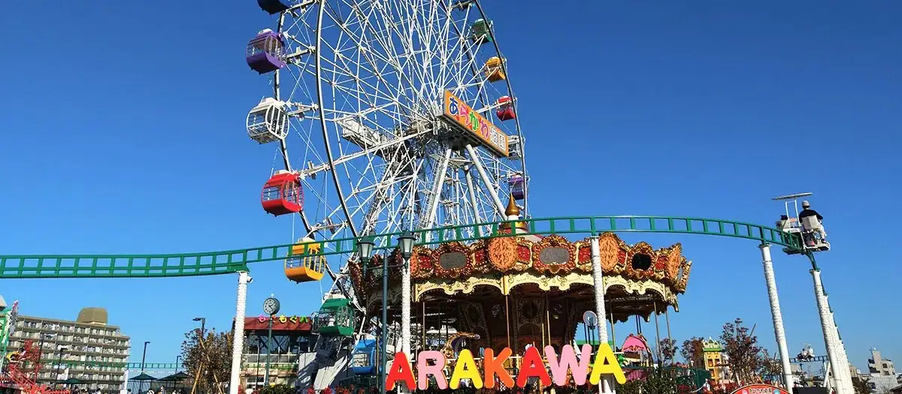

Arakawa, Tokyo: things to do, food and stays
Arakawa · Tokyo
Arakawa
Highlighted on the Tokyo map.

Sights
Dining
Ramenya Toy Box
ラーメン屋 トイ・ボックス

Noodle restaurant in Arakawa, Tokyo.
Ramen 1/20
Ramen にじゅうぶんのいち

Noodle restaurant in Arakawa, Tokyo.
Unagi Obana
尾花

Seafood restaurant in Arakawa, Tokyo.
Boulangerie Ianak
ブーランジェリー・イアナック

Sweets and bakery shop in Arakawa, Tokyo.
Edmond Nishinippori Ten
えどもんど 西日暮里店

Noodle restaurant in Arakawa, Tokyo.
Habutae Dango Honten
羽二重団子 本店

Sweets and bakery shop in Arakawa, Tokyo.
Mendokoro Hatori
めん処 羽鳥

Noodle restaurant in Arakawa, Tokyo.
Shoutai En Souhonten
正泰苑 総本店

Meat restaurant in Arakawa, Tokyo.
China Teuchi Ramen Bazoku Nippori ten
中国手打拉麺 馬賊 日暮里店

Noodle restaurant in Arakawa, Tokyo.
Men Sakadokoro Burari
麺酒処 ぶらり

Noodle restaurant in Arakawa, Tokyo.
Teuchi Udon Akau
手打うどん あかう

Noodle restaurant in Arakawa, Tokyo.
Menya Aishin Machiya ten
麺屋 愛心 町屋店

Noodle restaurant in Arakawa, Tokyo.
Ichiban
中華飯店 一番

Chinese or Asian restaurant in Arakawa, Tokyo.
Sandoitchi Senmon Popo
サンドイッチ専門店 ポポー

Restaurant in Arakawa, Tokyo.
Ura Saburon
裏サブロン

Noodle restaurant in Arakawa, Tokyo.
Fuji Matsu
富士松

Noodle restaurant in Arakawa, Tokyo.
Yamada Ya Nishinippori ten
山田屋 日暮里店

Meat restaurant in Arakawa, Tokyo.
Kou
興

Meat restaurant in Arakawa, Tokyo.
Ramen Sangokushi
らーめん三極志

Noodle restaurant in Arakawa, Tokyo.
Miraku Tei
味楽亭

Meat restaurant in Arakawa, Tokyo.
Majime Yakitori Sukebei
真面目焼鳥 助平

Meat restaurant in Arakawa, Tokyo.
Chuka Soba Kozakura
中華そば 虎桜

Noodle restaurant in Arakawa, Tokyo.
Puja Reservation
ベンガル料理プージャー

Chinese or Asian restaurant in Arakawa, Tokyo.
Moranbong
モランボン

Meat restaurant in Arakawa, Tokyo.
Oniyanma Nippori ten
おにやんま 日暮里店

Noodle restaurant in Arakawa, Tokyo.
Higurashi Bakery
ひぐらしベーカリー

Cafe in Arakawa, Tokyo.
Yakiton Masuda
やきとん ますだ

Izakaya or bar in Arakawa, Tokyo.
Aoki Ya
青木屋

Restaurant in Arakawa, Tokyo.
Hakata Ya
博多屋

Restaurant in Arakawa, Tokyo.
Kotteri no Shio Ramen Senmon Ten MANNISH Nishinippori
コッテリの塩らー麺専門店 MANNISH 日暮里

Noodle restaurant in Arakawa, Tokyo.
Kurosawa
黒さわ

Seafood restaurant in Arakawa, Tokyo.
Senshu An
千秋庵

Noodle restaurant in Arakawa, Tokyo.
Jukusei Wagyu Yakiniku Aging Beef Nishinippori honten Reservation
熟成和牛焼肉エイジング・ビーフ 西日暮里本店

Meat restaurant in Arakawa, Tokyo.
Cafe & Restaurant Danwashitsu New Tokyo
カフェ＆レストラン談話室 ニュートーキョー

Cafe in Arakawa, Tokyo.
Izakaya Torinobu
居酒屋鳥のぶ

Meat restaurant in Arakawa, Tokyo.
Yamasou Kuma no mae honten
山惣 熊の前本店

European restaurant in Arakawa, Tokyo.
Stay
Art Hotel Nippori Lungwood
アートホテル日暮里 ラングウッド

Art Hotel Nippori Lungwood is a hotel in Arakawa, Tokyo.